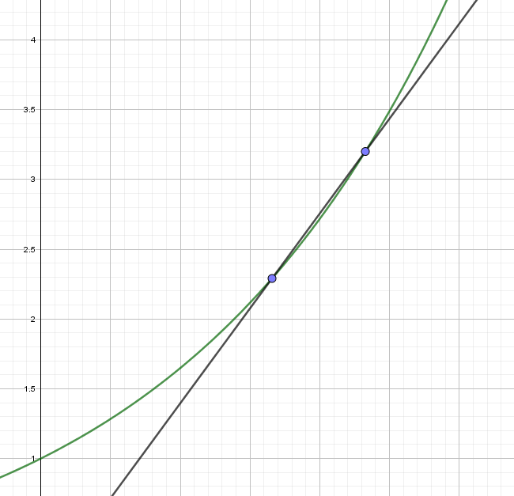

Simply put, differential calculus is all about finding the slope of a function also called the derivative (since it is derived from the function, but more on that later). That is, the limit where two points on the function meet as some value, say \( \Delta x \) (the difference along the x-axis), approaches 0. This can be easily visualized as seen in the following figures (figures 1 through 4).
Figure 1: Limit of function \( f(x) = e^{\frac{1}{2} x} \). Two points on the function connected by a line (the soon-to-be tangent line).
Figure 2: Limit of function \( f(x) = e^{\frac{1}{2} x} \). The two points are moving closer together, thus approximating the tangent line (or slope) better and better.
Figure 3: Limit of function \( f(x) = e^{\frac{1}{2} x} \). The two points are now almost overlapping and it is clear that a tangent to the function in that point is forming.
This can be achieved algebraically with the notation for the limit, namely: \( \lim_{\Delta x \rightarrow 0} \frac{f(x + \Delta x) - f(x)}{\Delta x} \). To derive this formula from scratch, it is necessary to articulate each component of the expression. There are, in general, three steps to follow. The first step is to find the growth of the function, the next is to find the quotient of difference, and the last step is to find the differential quotient. These steps will be explained in the next couple of paragraphs.
The growth of the function can be simply found by letting a function \( f(x) \) grow by a \( \Delta x \) and thus, when subtracting the two values, a difference, or growth, is obtained. Expressing this thought in symbols will look as follows:
$$ \Delta y = \Delta f(x) = f(x + \Delta x) - f(x) $$Now, the next step is to find the quotient of difference. This simply means the ratio that \( f(x) \) increases as \( x \) grows bigger in linear terms; put differently, the rise over run. The rise over run expressed in symbols, with the growth of the function in mind, looks as follows:
$$ \frac{\Delta y}{\Delta x} = \frac{f(x + \Delta x) - f(x)}{\Delta x} $$Lastly, the differential quotient is considered. The differential quotient is simply the limit of the quotient of difference when \( \Delta x \) approaches 0. This is exactly what the initial expression expresses and it has many conventional notations, and thus the differential quotient is:
$$ \lim_{\Delta x \rightarrow 0} \frac{\Delta y}{\Delta x} = \lim_{\Delta x \rightarrow 0} \frac{f(x + \Delta x) - f(x)}{\Delta x} \Rightarrow \frac{dx}{dy} = f'(x) $$This gives us the tangent, or slope, in that specific point on the function curve. Differentiating a simple function will always yield an outcome of \( n \cdot a \cdot x^{n-1} \), where \( a \cdot x^n \) is the original function (\( a \) being the slope and \( x \) being the dependent variable), which makes it easy to calculate using only one's head. Other rules apply for other combinations of functions. These other rules will be explained further in this article as well.
Suppose we have a function \( f(x) = g(x) \cdot h(x) \) of which we want to find the derivative. It is possible to go through the three steps and find a general rule for such a function, which will make it easier to calculate in future scenarios. Again we go throught the three steps, the first being the function growth:
$$ \Delta y = f(x + \Delta x) - f(x) = g(x + \Delta x) \cdot h(x + \Delta x) - g(x) \cdot h(x) $$Now, the next step is again to find the quotient of difference and as we know, that is found by dividing the quotient of difference with the difference along the x-axis.
$$ \frac{\Delta y}{\Delta x} = \frac{g(x + \Delta x) \cdot h(x + \Delta x) - g(x) \cdot h(x)}{\Delta x} $$Now we add a complicated "0" in the numerator, meaning a value that amounts to nothing, including the variables in question. The "0" looks as follows:
$$ 0 = g(x) \cdot h(x + \Delta x) - g(x) \cdot h(x + \Delta x) $$Added to the enumerator, it looks like so:
$$ \frac{\Delta y}{\Delta x} = \frac{g(x + \Delta x) \cdot h(x + \Delta x) - g(x) \cdot h(x) + g(x) \cdot h(x + \Delta x) - g(x) \cdot h(x + \Delta x)}{\Delta x} $$And rearanged:
$$ \frac{\Delta y}{\Delta x} = \frac{[g(x + \Delta x) - g(x)] \cdot h(x + \Delta x) + g(x) \cdot [h(x + \Delta x) - h(x)]}{\Delta x} $$Now seperated to be easilier readable and ready for differentiating:
$$ \frac{g(x + \Delta x) - g(x)}{\Delta x} \cdot h(x + \Delta x) + g(x) \cdot \frac{h(x + \Delta x) - h(x)}{\Delta x} $$The last step is now finding the differential quotient meaning the limit as \( \Delta x \) approaches 0. Thus:
$$ \lim_{\Delta x \rightarrow 0} \frac{g(x + \Delta x) - g(x)}{\Delta x} \cdot \lim_{\Delta x \rightarrow 0} h(x + \Delta x) + \lim_{\Delta x \rightarrow 0} g(x) \cdot \lim_{\Delta x \rightarrow 0} \frac{h(x + \Delta x) - h(x)}{\Delta x} $$ $$ \Downarrow $$ $$ f'(x) = g'(x) \cdot h(x) + g(x) \cdot h'(x) $$This makes it considerably easier to find the derivative of the functions that can be expressed as a product of two other functions.
The quotient rule is derived much the same way the product rule was. Suppose now instead that we have a function \( f(x) = \frac{g(x)}{h(x)} \) of which we want to find the derivative.